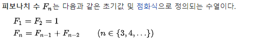

* 다음 포스팅의 모든 내용은 BaaaaaaaaarkingDog 님의 [실전 알고리즘] 0x0B강 - 재귀 강의를 공부한 뒤 개인적인 공부 용도로 간략하게 요약하여 정리한 글 입니다. 자세한 내용은 아래 바킹독님의 블로그에서 확인해 주세요.
BaaaaaaaarkingDog | [실전 알고리즘] 0x0B강 - 재귀 (encrypted.gg)
[실전 알고리즘] 0x0B강 - 재귀
안녕하세요, 재귀 파트를 시작하겠습니다. 지금 자신있게 말할 수 있는게 있는데 이 파트가 정말 어려울 것입니다. 물론 이전의 내용들 중에서도 군데군데 어려운게 있었겠지만 이번 단원에서
blog.encrypted.gg
#1 귀납적 사고
#2 재귀 함수의 특성
_base condition
_함수를 명확하게 정의하자
_재귀함수와 반복문
_재귀함수와 피보나치 수열
..요약
#1 귀납적 사고
재귀 알고리즘이란, 하나의 함수에서 자기 자신을 다시 호출하여 작업을 수행하는 알고리즘이다.
재귀로 문제를 풀이하기 위해 가장 중요한 점은 우리가 평소에 생각해 오던 절차 지향적 사고를 버리고 귀납적 사고를 통해 문제에 접근해야 한다는 것이다.
절차 지향적 사고와 귀납적 사고의 차이를 도미노를 이용하여 이해해 보도록 하자. 예를들어 도미노 n개가 나열되어 있다고 가정해 보자.
1번 도미노를 쓰러뜨리면 2번 도미노가 쓰러지고 2번 도미노가 쓰러지면 3번 도미노가 쓰러진다. 이런식 으로 연이어 모든 n개의 도미노가 쓰러지게 될 것이다. 이것이 바로 절차 지향적 사고이다.
그렇다면 이번에는 귀납적 사고로 도미노의 쓰러지는 과정을 설명해 보도록 하자. 1번 도미노가 쓰러진다. 1번 도미노가 쓰러지는것은 매우 자명하고, k번 도미노가 쓰러지면 k+1번째 도미노 또한 쓰러진다. 따라서 결국은 모든 도미노가 쓰러지게 될 것이다.
평소에 우리는 당연하듯이 절차 지향적 사고를 이용해 코딩을 해 왔다. 함수A를 호출하면 연이어 함수B가 호출될 것이고,, 함수B가 호출 되면 변수C를 출력한다.. 와 같이 말이다. 하지만 재귀 알고리즘을 이용해 알고리즘 문제 풀이를 하는 동안은 앞에서 강조했듯이, 절차 지향적 사고를 버려야만 한다.
#2 재귀 함수의 특성
_base condition
재귀 함수는 특정 입력에 대해서 자기 자신을 호출하지 않고 종료해야 한다. 또한 모든 입력은 base condition으로 수렴 해야만 한다. 이를 지키지 않으면 재귀함수는 무한루프에 빠져 에러를 발생시키고 말 것이다.
void recursive(int n){
cout << n << endl;
recursive(n-1);
}위의 함수는 n부터 1까지의 값을 출력하는 재귀 함수이다. 하지만 recursive 함수를 실행시키면 무한루프에 빠져 프로그램이 뻗고 말 것이다. 그 이유는 base condition을 따로 지정해 주지 않았기 때문이다.
void recursiveFixed(int n){
if(n==0) return; // base condition
cout << n << endl;
recursive(n-1);
}recursiveFixed 함수에 base condition을 추가 해주었다. 특정 입력(0)에 대해서 자기 자신을 호출하지 않고 종료하며, 모든 입력은 base condition으로 수렴하기에 무한루프에 빠지지 않고 정상적으로 n부터 1까지의 수를 출력한다.
_함수를 명확하게 정의하자
재귀함수를 만들때는 함수를 명확하게 정의해야 한다. 함수를 명확하게 정의한다는 것은 1.함수의 인자로 어떤 것을 받을지, 2. 어디까지 계산한 후 자기 자신에게 넘겨줄 지를 명확히 하는 것을 의미한다.
_재귀함수와 반복문
모든 재귀함수는 재귀구조 없이 반복문 만으로 동일 동작을 수행하는 함수를 구현할 수 있다. 재귀를 적절하게 잘 사용하면 코드가 간결해 진다는 장점이 있지만, 메모리와 시간적 측면에서는 어느정도 손해를 보게 된다.
따라서 반복문으로도 간단하게 해결 가능한 문제라면 반복문을 사용해 구현하고, 반복문 만으로는 너무 코드가 복잡해 질 것 같다면 재귀 구조를 사용하는 것이 좋다.
_재귀함수와 피보나치 수열

피보나치 수열은 초항(F1, F2)가 1이고 나머지는 그 직전 항 2개의 합으로 연결되는 수열이다. ex) 1, 1, 2, 3, 5, 8 ...
다음 fibo 함수는 재귀 구조를 이용해 피보나치 수열을 구현한 코드이다. 언뜻보면 base condition도 잘 지켜졌고 문제가 없는 함수라고 생각할 수 도 있다. 하지만 n의 값이 커질수록 연산의 처리량이 지수함수 형태로 매우 가파르게 늘어난다.
int fibo(int n){
if(n == 1) return 1; // base condition
return fibo(n-1) + fibo(n-2);
}fibo(5)를 호출하는 과정을 예시로 들어 문제의 원인을 파악해 보도록 하자.
fibo(5)를 호출하면 fibo(4)와 fibo(3)이 호출된다. fibo(4)를 호출하면 fibo(3)과 fibo(2)가 호출된다. fibo(3)을 호출하면 fibo(2)와 fibo(1)이 호출된다 fibo(2)를 호출하면 fibo(1)과 fibo(1)이 호출된다.
위 과정을 자세히 살펴보면 이미 한 번 호출된 함수가 또 다시 호출되는 케이스가 빈번하게 발생하고 있다. 자기 자신의 호출을 계속하다 보니 시간 복잡도가 예상과 달리 급격하게 늘어나 버린다.
따라서 이렇게 한 함수가 자기 자신을 여러번 호출하는 케이스는 재귀 호출 보다는 작은 문제의 답으로 큰 문제의 답을 풀어내는 다이나믹 프로그래밍(Dynamic Programming) 알고리즘을 사용해 문제를 풀이하는 것이 좋다. DP를 이용하면 재귀의 문제점인 중복 호출을 어느정도 해결할 수 있다.
..요약
1. 재귀 알고리즘을 이용해 문제에 접근할 때는 절차 지향적인 사고를 버리고 귀납적인 사고로 접근해야 한다.
2. _base condition : 특정한 입력에 대해서 자기 자신을 호출하지 않고 종료 해야만 하며, 모든 입력은 base condition으로 수렴해야 한다.
3. 재귀함수를 정의할때는 함수의 인자로 어떤 값을 받을 지, 어디까지 계산한 후 자신에게 넘겨줄 지 명확히 설계해야 한다.
4. 모든 재귀함수는 재귀구조 없이 반복문으로 똑같이 구현할 수 있다.
5. 함수가 자기 자신을 여러번 중복해서 호출하는 케이스는 재귀보다 DP를 이용하는 것이 바람직하다.